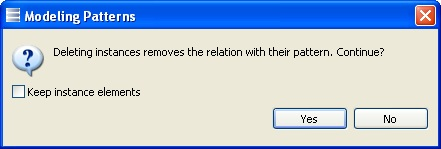

The delete button
Deleting an instance consists in deleting the relationship between the model elements and the pattern. The model elements become like any others and they do not give access to the Instance Management Panel any longer.
Additionally, this operation usually involves the deletion of all instance elements. It is however possible to keep the elements in the model by checking the “Keep instance elements” check box which appears in the confirmation dialog.

Note that like every operation on an instance (or more generally on a model), the delete operation can be undone by pressing or clicking the “Edit” -> “Undo” menu item.